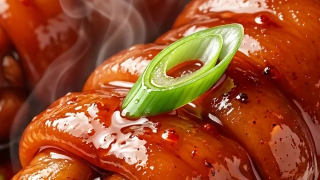

There is nothing to eat.
Only 10% is meat, true. But meat was never the reason this cut became famous.
No. 006 / Misunderstood Chinese Food
A traditional Chinese delicacy known for its tender texture, rich sauce, and slow-cooked flavor. It has a hoof. It has knuckles. It looks like it belongs in a biology classroom — and after six hours in the pot, it becomes one of the most gelatinous, deeply savory things you will ever eat.

40% bone, 30% skin, 20% tendon and cartilage, 10% meat — a collagen delivery system disguised as a hoof.
Trotters symbolize prosperity and abundance. They hold court at festivals, banquets, and family celebrations.
Six to eight hours minimum. Zero shortcuts. The mahogany gloss is earned, never bought.
What Is It?
Pork trotters — 猪蹄 (zhūtí), also known as pig feet — are the cut where cultures quietly divide. In much of the West they are ground into sausage or forgotten entirely. In China they are the centerpiece of red-braised banquet dishes, Cantonese master stocks, and Sichuan's famous milky trotter soup.
The shock for first-timers is that there is almost no lean muscle here. The appeal, once you understand it, is exactly that: slow cooking converts the trotter's enormous collagen reserves into silky gelatin, wrapping a little intensely flavored meat in soft skin, wobbly tendon, and a sauce that coats your lips and refuses to let go.
First Reaction
On one side: a foot. Hair, hoof, knuckles — something that looks like a crime scene prop. On the other: a clay pot of lacquered, fall-apart braised trotters that people plan holidays around. The distance between those two pictures is exactly six hours, a cleaver, and chemistry.

Myth vs Fact
Only 10% is meat, true. But meat was never the reason this cut became famous.
Pig skin is ~28% collagen by weight — one of the highest of any cut. Heat and time turn it into pure silk.
Nobody serves desperation at a wedding banquet. Trotters carry symbolism: prosperity, abundance, good fortune.
Festivals, family gatherings, and banquet menus across China — plus Jokbal nights in Seoul and Crispy Pata feasts in Manila.

Visual Story
Follow the hoof from prep table to lacquered finale — the anatomy, the chemistry at 70°C, the hour-by-hour transformation, and the sauce reduction that ends all arguments.
Open the storyDeep Dive
The 40/30/20/10 anatomy, the intervention, the aromatics architecture, and why there are exactly zero shortcuts.
Read the articleGuide
A tidy table of contents for the overview, the alchemy, the craft, and what comes next.
Browse chaptersHow to Eat It
红烧猪蹄 — the eastern Chinese classic. Red-braised with caramelized rock sugar, ginger, and star anise until the sauce turns to mahogany lacquer. The beginner-friendly route.
卤水猪蹄 — slow-simmered in a master stock some restaurants have maintained for decades. Soft skin, deep savory flavor, zero drama, all depth.
老妈蹄花 — Chengdu's "grandma's trotter blossom." A milky, collagen-thick broth with a trotter so tender it gives up before your chopsticks do. The comfort-food route.